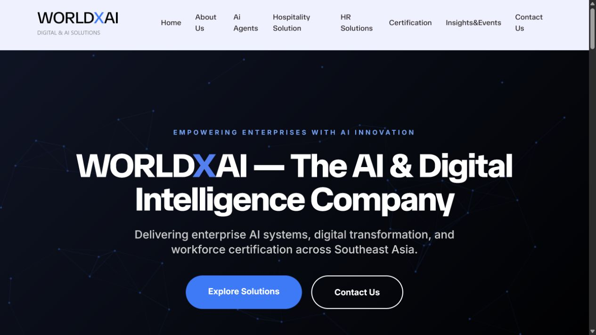
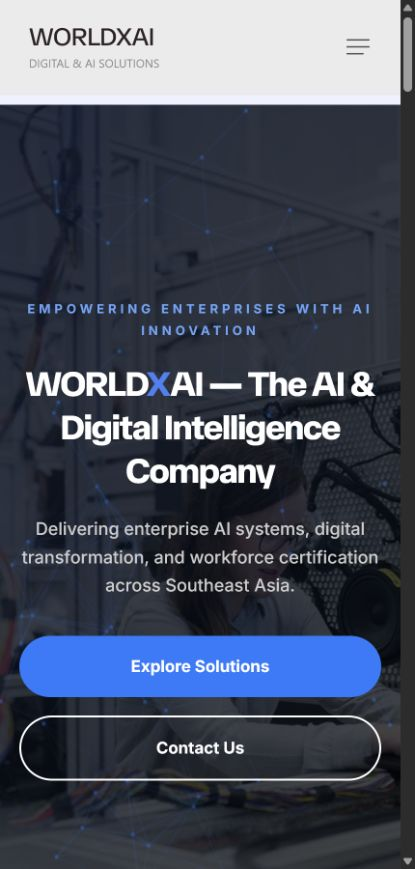
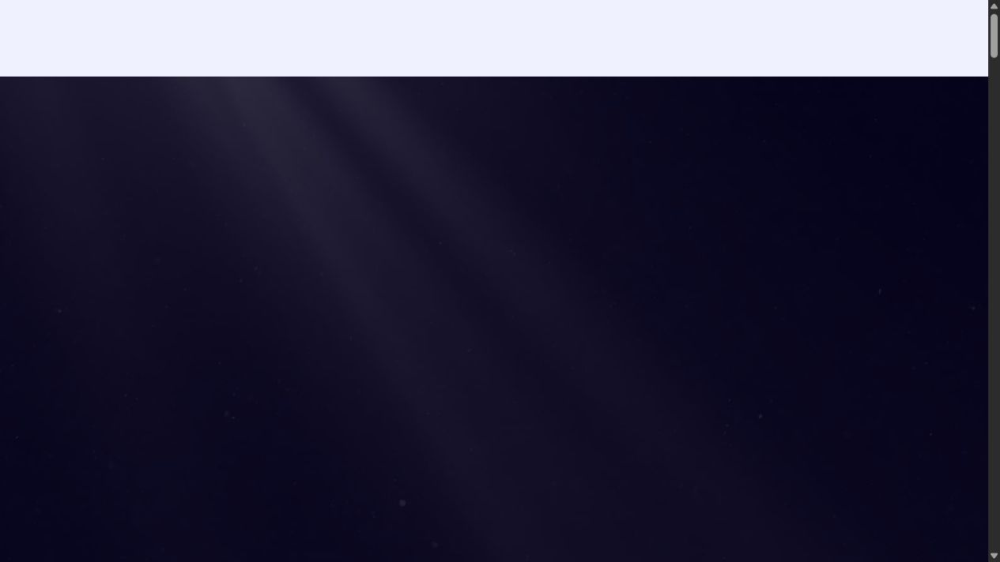

IT Project Internship · Agile Delivery · Web Development
Supporting WORLDXAI’sDigital Platform Delivery
An end-to-end internship project combining business analysis, Agile coordination, stakeholder collaboration, WordPress development, UAT and quality assurance for an enterprise AI and digital-solutions website.


More than content editing
Business Analysis
Gathered and refined requirements, identified gaps and translated business needs into actionable website work.
Agile Delivery
Supported sprint activities, Jira tracking, milestones, risks and issue coordination throughout delivery.
Web Development
Managed WordPress updates and supported responsive interface improvements using HTML and CSS.
Quality Assurance
Created and executed UAT test cases, performed functional checks and documented defects before delivery.
Understanding the platform I supported
WORLDXAI uses its website to communicate enterprise AI, digital transformation and workforce-development services across multiple solution areas.

AI Agents
Enterprise automation and AI-enabled operational support.
Presenting complex solutions through a clear digital experience
The Business Need
- Present multiple technology services clearly
- Communicate across industries and audiences
- Build confidence through professional content
- Maintain consistency across service pages
- Support enquiries and digital sales pathways
- Make updates manageable internally
The Website Response
- Structured service categories
- Clear information hierarchy
- Responsive page layouts
- Consistent calls to action
- Centralised WordPress content management
- Accessible enquiry pathways
My work across the delivery lifecycle
Discover
Gathered requirements and clarified stakeholder expectations.
Requirements NotesDefine
Converted needs into user stories, acceptance criteria and tasks.
User StoriesPlan
Supported sprint planning, Jira tracking, milestones and risk reviews.
Jira BoardBuild
Managed WordPress content and assisted with HTML and CSS improvements.
WordPress UpdateTest
Prepared test cases, completed UAT checks and logged defects.
UAT Test CaseRefine
Communicated issues, supported corrections and repeated validation.
Defect LogDeliver
Supported deployment, reporting and final quality review.
Project Report
Working within an Agile delivery cycle
- Requirements
- User Stories
- Sprint Planning
- Implementation
- Testing
- Stakeholder Review
- Refinement
- Delivery
Sprint Coordination
Tracked activities and progress through Jira while supporting priorities and milestones.
Risk & Issue Management
Identified blockers, documented issues and supported communication to reduce disruption.
Reporting
Prepared project updates and technical documentation for stakeholder visibility.
Turning stakeholder needs into development-ready work
- Stakeholder Request
- Requirement Clarification
- User Story
- Acceptance Criteria
- Development Task
- Validation
User Story
As a prospective client, I want to explore WORLDXAI’s solution categories clearly so that I can identify the service most relevant to my organisation.
Acceptance Criteria
- Major solution categories are visible and understandable.
- Each service has a clear path to more information.
- The layout remains usable across desktop and mobile.
- Contact or enquiry actions are easy to find.
Business Stakeholders
Defined communication and service needs.
Content Team
Provided service information and updates.
Development Team
Implemented technical and visual changes.
Project Supervisor
Reviewed progress, risks and delivery quality.
Validating quality before delivery
- 01
Define Scenarios
Identify important user and business journeys.
- 02
Prepare Test Cases
Document steps, expected results and conditions.
- 03
Execute Tests
Check functionality, links, layouts and content.
- 04
Record Defects
Log issues with evidence and reproduction steps.
- 05
Retest Fixes
Confirm corrections without new issues.
- 06
Obtain Validation
Check results against acceptance criteria.
Functional
NavigationButtons & linksFormsPage behaviour
Content
AccuracyConsistencyMissing contentReadability
Responsive
DesktopTabletMobileOverflow
Quality
Accessibility basicsVisual consistencyBroken elementsCross-page checks
Service-page CTA does not display correctly on mobile.
The CTA remains visible, aligned and easy to select.
Corrected and retested
Supporting a multi-service digital platform
Homepage
Introduces WORLDXAI’s positioning and major digital and AI solution categories.
Explore live websiteWhat I contributed during the internship
Analyse
Requirements Gathering
Collected and refined stakeholder needs into actionable website requirements.
User Stories & Acceptance Criteria
Translated business needs into specifications for delivery and testing.
Coordinate
Agile Project Support
Supported sprint activities, Jira updates, task tracking and milestones.
Stakeholder Communication
Shared progress, clarified changes and supported cross-functional alignment.
Build
WordPress & Content
Managed content updates and structured information across service pages.
HTML & CSS Support
Applied targeted changes to presentation and responsive behaviour.
Validate
UAT & Functional Testing
Created test cases, executed key journeys and checked requirements.
Defect & Risk Management
Documented defects, monitored issues and supported retesting.
Capabilities used across delivery
Business Analysis
Requirements GatheringUser StoriesAcceptance CriteriaProcess Analysis
Project Delivery
AgileScrumJiraRisk ManagementStakeholder CoordinationReporting
Web Delivery
WordPressHTML5CSS3Responsive ReviewContent Management
Quality
UATFunctional TestingTest CasesDefect LoggingRetesting
More than a website-development internship
The project gave me practical experience supporting a digital product from requirements clarification through implementation, UAT, refinement and delivery. It strengthened my ability to connect business needs, stakeholder expectations and technical work within an Agile environment.
Business-to-Technology Translation
Improved my ability to turn stakeholder needs into development-ready requirements.
Agile Delivery Experience
Built practical experience coordinating tasks, risks, progress and communication.
Quality-Focused Execution
Strengthened UAT, functional testing, defect reporting and validation skills.
Web Platform Delivery
Expanded practical WordPress, responsive-interface and front-end experience.
What the internship taught me
Successful digital delivery depends on clear requirements, frequent communication and continuous validation—not only development.
Balancing stakeholder expectations, content requirements, technical constraints and delivery timelines required careful prioritisation.
I would add stronger accessibility audits, analytics-based content evaluation, reusable test automation and structured release documentation.
Public project material
Website Screenshot Set
Public website views used throughout this case study.